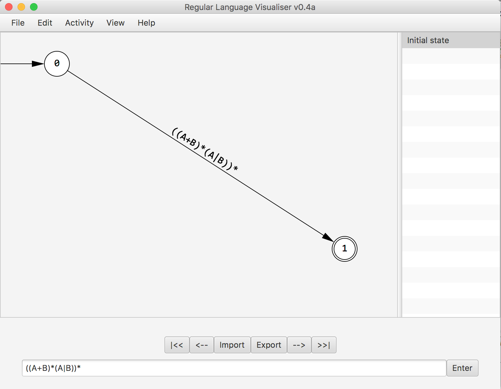
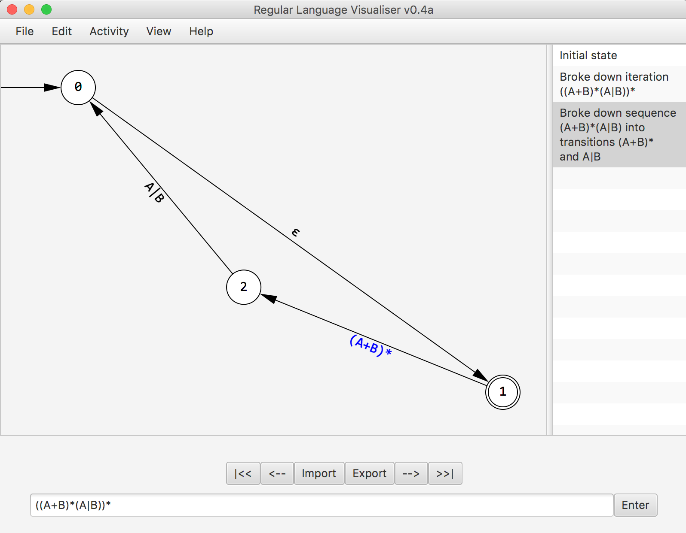
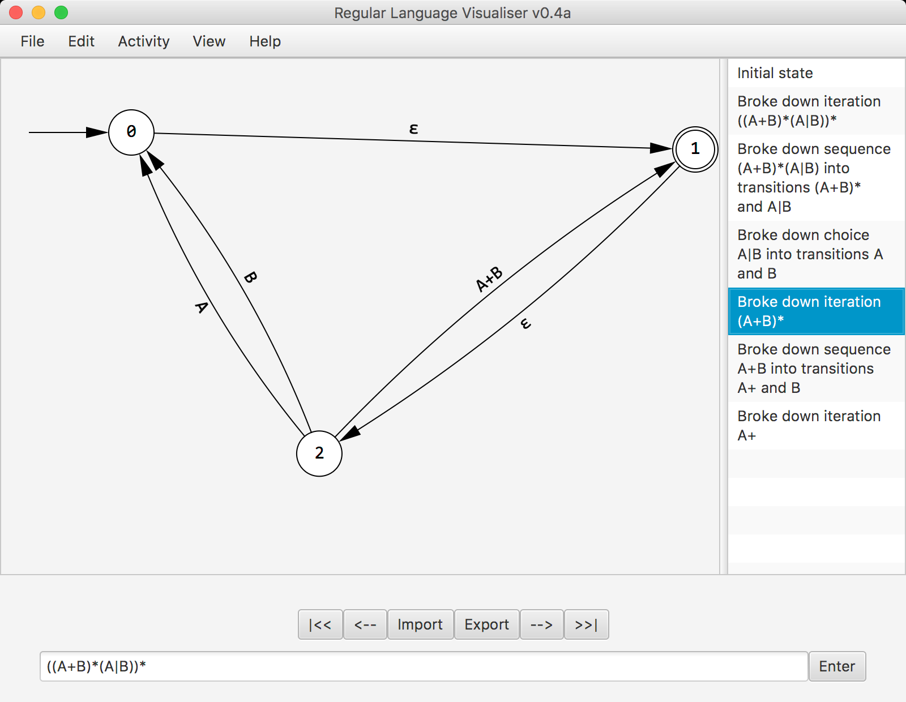

STEP 2. Enter your regular expression, into the text area
and press enter
STEP 3. Once your graph appears, you can left click on a state and drag to reposition it

STEP 4. Move the cursor onto a label between two states, double clicking on a label will break the expression down.

STEP 5. On the right of the window there is a history list. It shows a brief explanation of the breakdown, additionally you can move through the various stages using the buttons above the text area or by selecting items from the history list.
